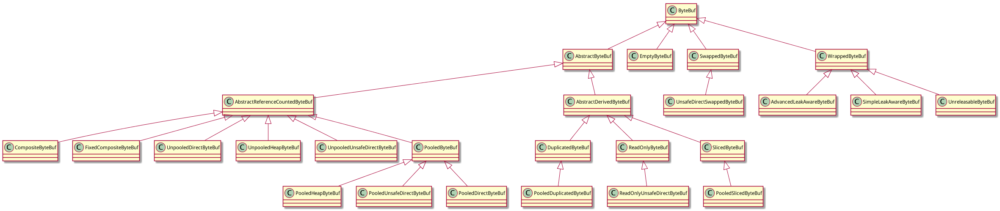
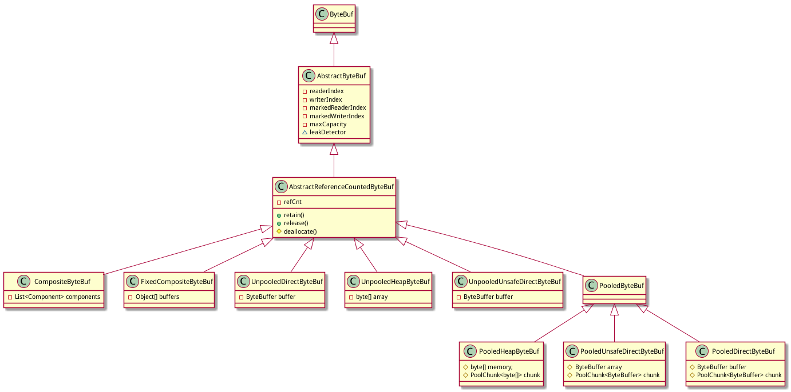
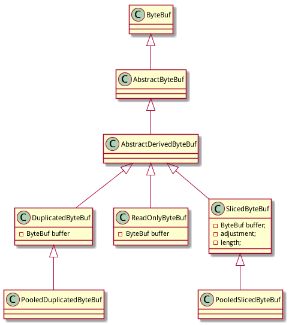
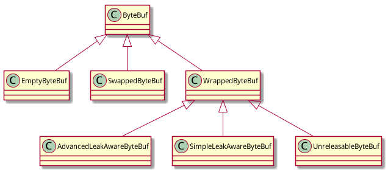

ByteBuf实现类众多,继承层级复杂:

第一眼看上去比较乱,拆分为三个大块后就容易理解:
ByteBuf的基础实现类，按照内存分配方式不同分为：
然后按照是否支持池共享又分为：
注意: PooledByteBuf是4.x之后的新特性, netty3.*和之前版本不支持的.

去掉干扰之后, 再看ByteBuf的基本实现就很清晰:
首先是ByteBuf/AbstractByteBuf/AbstractReferenceCountedByteBuf搭建起基础
根据是否支持Pool,区分为Unpooled和Pooled两大阵营
Unpooled阵营:
- UnpooledHeapByteBuf: 提供非池化的堆内存支持, 基于byte[]
- UnpooledDirectByteBuf: 提供非池化的直接内存支持, 基于 NIO ByteBuffer
- UnpooledUnsafeDirectByteBuf: 提供非池化的直接内存支持,基于 NIO ByteBuffer, **要求sun.misc.Unsafe可用**
Pooled阵营:
- PooledByteBuf: Pooled的基类, 提供Pool的基本实现
- PooledHeapByteBuf: 提供池化的堆内存支持, 基于byte[]
- PooledUnsafeDirectByteBuf: 提供池化的直接内存支持, 基于 NIO ByteBuffer
- PooledDirectByteBuf: 提供池化的直接内存支持,基于 NIO ByteBuffer, **要求sun.misc.Unsafe可用**
设计上,比较奇怪的是没有定义一个UnpooledByteBuf基类,造成两大阵营的结构不对称,看上去不够美观 :)
CompositeByteBuf
在Unpooled和Pooled两大阵营之外, CompositeByteBuf/FixedCompositeByteBuf是一个超然的存在.
CompositeByteBuf是一个虚拟的buffer,将多个buffer展现为一个简单合并的buffer,以便实现netty最重要的特性之一: zero copy.后面有详细分析.
FixedCompositeByteBuf功能类似CompositeByteBuf, 以只读的方式包装一个ByteBuf数组,通常用于写入一组ByteBuf的内容.
注: 从类的功能和实现上看, 感觉CompositeByteBuf更应该归入后面的ByteBuf衍生类.
Derived ByteBuf是在ByteBuf的基本实现基础上衍生出来的: 包装其他ByteBuf,然后增加一些特别的功能.
Derived ByteBuf有抽象类AbstractDerivedByteBuf作为基类.AbstractDerivedByteBuf的javadoc如此描述:
Abstract base class for ByteBuf implementations that wrap another ByteBuf.

类继承结构如图,主要有:

除了上面介绍的ByteBuf的底层实现类和衍生类之外,netty还提供了3种特殊的ByteBuf:
WrappedByteBuf的主要作用是作为基类派生出下面几个子类:
AdvancedLeakAwareByteBuf和SimpleLeakAwareByteBuf用于resource leak detect. 具体介绍见类LeakAwareByteBuf.
UnreleasableByteBuf用于阻止其他对ByteBuf的销毁. 具体介绍见类UnreleasableByteBuf.
在将所有的ByteBuf类划分为上述3个大块之后, ByteBuf的设计就很清晰了.
后面将通过重点介绍netty提供的几个重要特性来详细展开相关ByteBuf类的具体实现.